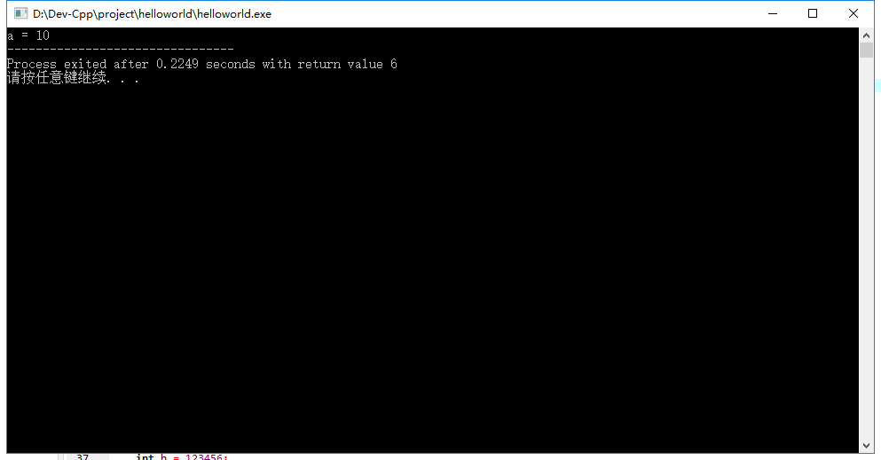
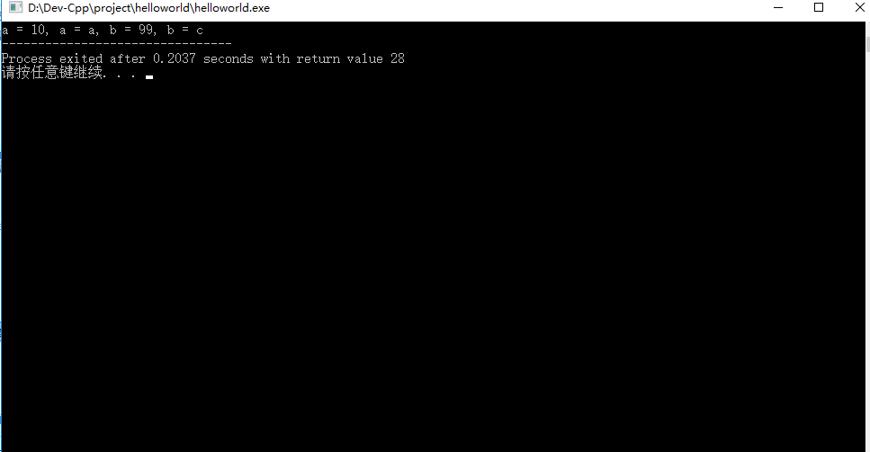
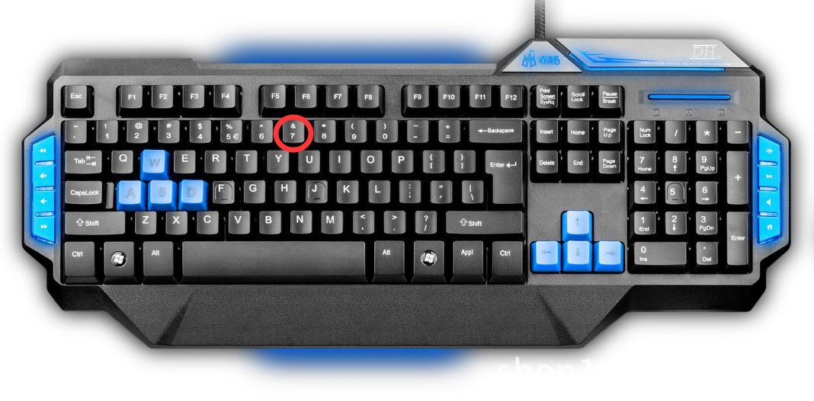
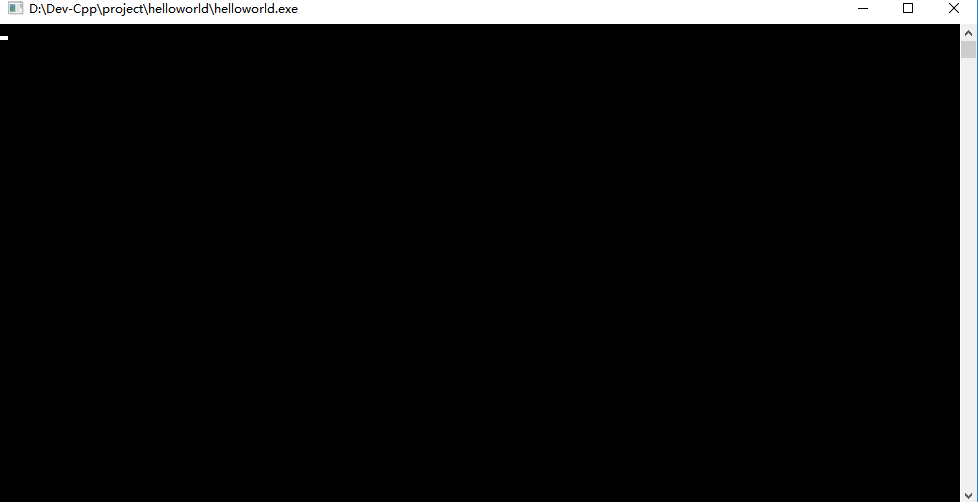
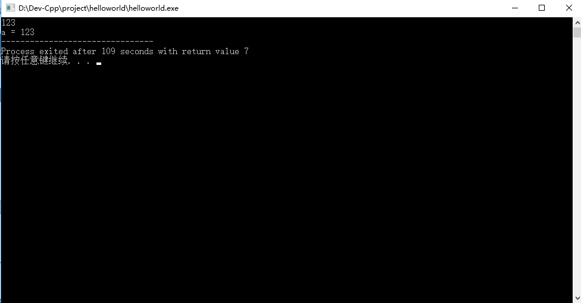
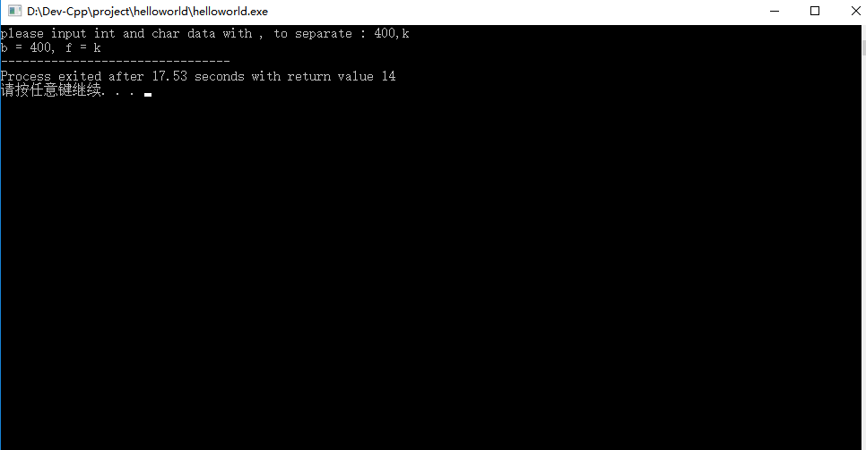

导读：程序要完成高级功能，首先要能够做到基本的加减乘除。本章从程序中变量的概念开始，结合之前学的输出函数和新介绍的输入函数制作简单人机交互程序，然后讲解最基础的加减法运算，自制简单计算器程序练手。
5.1 变量
5.1.1 变量声明定义与赋值表达式
上一章讲了数据类型，数据类型要和变量结合在一起才能够在C语言程序中体现出它们的作用，一般的变量是这样定义的：
数据类型 变量名;变量名可以是26个字母中的任意一个，也可以是非C语言关键词的单词或自定义字母组合，也可以加下划线等等，我们就先用简单字母来命名吧，比如声明一个整型的变量a，如下：
int a;也可以定义多个变量，变量名之间用逗号隔开，最后加分号表示结束，如下：
int a,b,c,d;也可以在定义变量的时候，直接赋值，这就要用上赋值表达式，如下：
int a = 3; 赋值的意思就是赋予数值，也可以多个一起，如下：
int a = 3, b = 4, c = 5;当然也可以定义完变量后，再给变量赋值，如下：
int a;
a = 3;请注意，C语言中，规定变量定义必须是代码的最开始部分，比如以下在C语言不建议这么做，虽然刚才的方式用Dev-C++不会报错，但是不代表别的编译器不会报错，如下：
#include <stdio.h> void main()
{
printf("hello world");
int a = 10;
}因为C语言的编译规则有多种，所以建议变量声明定义放在代码开始部分，以下比较规范，
注意：C语言编译标准随着时代的变迁做几次改变，如最开始的C89然后有C99以及最新的C11，后续文章讲解到编译规则的时候再剖析这部分。
#include <stdio.h> void main()
{
int a = 10;
printf("hello world");
}
5.1.2 初识格式化输出
如何查看变量的值，可以用debug的办法（后续再讲解用Dev-C++上断点调试办法），也可以通过printf这个C库函数查看，代码如下，运行结果如图5.1，
#include <stdio.h> void main()
{
int a = 10;
printf("a = %d", a);
}

图5.1 printf输出情况
可以看出输出为“a = 10”，在printf语句中，printf(“a = %d”, a);，其中“a = ”是要输出的字符串，就像之前输出“hello world”一样，写什么就输出什么，%d表示这段字符串后面输出的变量值，按照十进制整型输出，下面来点复杂的，然后再解释啥是格式控制符，代码如下，运行结果如图5.2，
#include <stdio.h> void main()
{
int a = 10;
int b = 'c';
printf("a = %d, a = %x, b = %d, b = %c", a, a, b, b);
}
图5.2 稍微复杂的printf输出
按照一个萝卜一个坑的原则，第一个“%d”对应一个输出“a”，第二个“%x”对应下一个输出选“a”，第三个“%d”对应“b”，最后一个“%c”对应“b”。请记住，一定要一一对应，否则会有意想不到的错误哦。
C语言有规定格式控制符，在输出函数printf（“”）的冒号“”里面，如果有百分号%号出现，下一个字母会有它独特的意义：
比如d，表示按照十进制格式输出，
比如x，表示按照十六进制格式输出，
比如c，表示按照单个字符格式输出。。。。。。当然还有很多，现在先介绍这些。
注意：字符一般会涉及ASCII码表，这部分知识怕初学者负担太重，放后面再介绍。
5.1.3 再来一个C库函数scanf以及格式化输入
屏幕显示的程序中的数据，叫做输出，敲键盘传入程序中的数据，叫做输入。输出函数一般用printf，输入函数一般用scanf。下面来写一段程序，程序大体思路是，先定义一个变量a，然后用输入函数scanf给a赋值（通过键盘敲的数值），最后通过输出函数printf在屏幕显示a的数值，代码如下：
#include <stdio.h>
void main()
{
int a;
scanf("%d", &a);
printf("a = %d", a);
}
注意：scanf语句中，a前面有个字符是&，读者可以看看键盘上那一排数字键，对了就在数字7这里，键盘要输入&，可以通过按住键盘Shift键+数字键7，如图5.4，

图5.3 键盘
写好代码后，编译运行，发现控制台一片黑，如图5.3，

图5.4 控制台一片黑
可以看到有个光标在闪烁，请用键盘输入123试试看，然后再按下回车按键，结果如图5.4，

图5.5 运行结果
从结果上可以看出，输出的“a = ”加上刚才键盘输入的123一起在屏幕上显示出来，这就是最基本的输入输出函数的使用了。下面讲解这段程序：
scanf中，变量前面有个符号“&”想必让人产生了困扰，“&”符号叫做取地址符号，之前讲过内存存放数据的，每个数据都有它的地址，希望后续讲解指针的时候读者会有更清晰的了解。希望读者不用困扰，为什么不直接这么写：scanf(“%d”, a),而要这么写：scanf(“%d”, &a)，差别在于是否有“&”，请先这么用着吧！
为了更加人性化，在scanf前添加一段printf提示即将输入的字符格式，再添加char型格式输入，下面一段代码会比之前稍微复杂那么一点点，
#include <stdio.h>
void main()
{
int b;
char f;
printf("please input int and char data with , to separate : ");
scanf("%d, %c", &b, &f);
printf("b = %d, f = %c", b, f);
}编译运行后，在提示语出现后，在冒号：后面输入400，k，运行结果如图5.5，
注意：在代码的scanf中，有用逗号，来隔开b和f的取值，所以在屏幕输入的时候，也要用逗号隔开整型和字符型，最后回车键显示结果。

图5.6 运行结果
这样整型类型的b就被赋值400，字符f就被赋值‘k’了。对于整型读者可以赋值不同的数值大小，请记住这些类型的取值是有上下限制的，如果超过可能会有意想不到的后果，可以在第四章查看表4.1找到基本数据类型的取值限制，至于字符可以输入26个字母中的一个，或者一些标点符号等等，当然也能赋值具体的整数值。